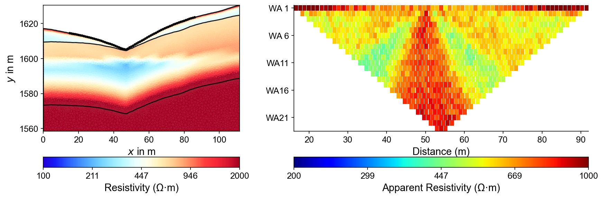
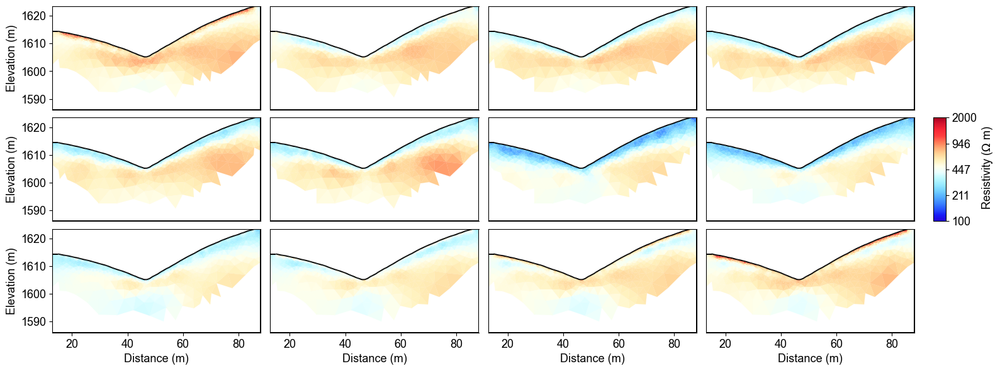

PyHydroGeophysX#
Open-source hydrogeophysics
PyHydroGeophysX
Connect hydrological models with geophysical measurements.
Predict survey responses from hydrological states, interpret field observations, and bring geophysical constraints back into hydrological models.
Start with what you have#
Choose the path that matches your data and research question.
Start from MODFLOW, ParFlow, water content, saturation or porosity. Apply petrophysical relationships and predict ERT, seismic, EM or potential-field measurements.
Quality-check field measurements, recover physical-property models, and translate the results into hydrologically meaningful quantities.
Analyse change through time, introduce structural information, combine complementary methods, and assess uncertainty.
Choose how you want to work#
The same workflows are available from a script, from a desktop interface, or through natural language.
Build reproducible workflows, automate repeated analyses, and integrate PyHydroGeophysX into research code.
Process data, inspect surveys, build meshes, run inversions and visualise results through an interactive interface.
Use natural-language guidance to configure, execute and inspect the supported hydrogeophysical workflows.
See AQUAH in action#
AQUAH is the built-in assistant. It takes a goal in plain language, configures the workflow, runs it and reports back. It runs in the desktop application and in the browser, and both demos below show a complete workflow, not a mock-up.
Download Desktop Studio Open the web app Install with an AI agent
Windows and macOS bundles are published on GitHub Releases. The AI-agent install prompt is a text file you paste into a coding assistant to have it check the environment, install the package and verify startup; Installation covers the manual route, with its own video.
Supported methods and models#
Use each method on its own, or connect it to a hydrological, monitoring, structural or joint workflow.
Compare the methods to see what each one needs as input and which workflows it can feed.
Featured workflows#

Convert a hydrological state into a resistivity model and predict the measurements an ERT survey would record.

Recover a model from field measurements, then estimate water content with the uncertainty the petrophysical parameters imply.

Invert a monitoring series together so that the recovered change is constrained rather than differenced after the fact.
Open-source hydrogeophysics#
Python package · Desktop Studio · Reproducible examples · API reference
GitHub · Installation · Data and processing · API reference · Usage and downloads · Environmental Geophysics course
Citing PyHydroGeophysX#
If PyHydroGeophysX contributes to your research, please cite the software paper and any numerical engines your analysis actually ran.